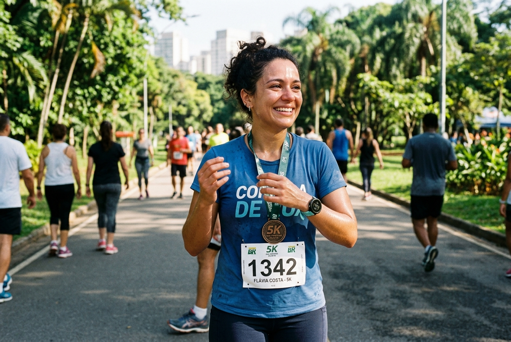

OBJETIVO 01 • PRIMEIRO 5KM • COMEÇAR DO ZEROPara quem nunca correu e quer começar do absoluto zero
Se você não aguenta correr nem um minuto seguido ou tem medo de dores, este é o seu ponto de partida. Alternando caminhadas estratégicas com trotes leves, seus músculos e respiração ganham condicionamento gradativo. Em poucas semanas, cruzar 5km contínuos se torna uma conquista inesquecível.
Como a Pacheco Running auxilia você:
-
Método caminhada-e-corrida suave: Respeitamos o seu fôlego inicial com transições progressivas. Ninguém fica para trás.
-
Correção biomecânica presencial: Treinadores ajustam sua postura, cadência e tipo de pisada desde a primeira aula para eliminar dores na canela e nos joelhos.
-
Sua estreia comemorada em equipe: Tenda exclusiva de apoio, aquecimento guiado e suporte presencial na sua primeira prova oficial de rua.